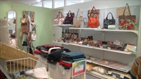

メニュー
ご紹介
こんなことをしています
夢うさぎでは海外の生地を中心として、布バック、生活雑貨・小物などを作り販売しています。他店ではなかなか見られない色や柄を合わせ、ひとつひとつ工房で心をこめて手作りしています。またお気に入りの布でオーダーも承っております。
特徴・方針
こまやかな作業が好きな方、作品を作ることが好きな方、集中力をつけたい方、手芸、手作業に興味がある方、居場所として利用したい方。多くの店舗がある商業施設の中の工房＆お店のため公共マナーが守れる方。
責任者メッセージ
店舗では、レイアウトなどを楽しみながら、工房から受け取った素敵な作品に囲まれて販売をしています。販売スタッフや仲間と一緒に、在庫管理やレジ打ちなどの実務、季節感ある店内のしつらえや商品への気配り、お客様への対応などを学んでいきます。販売に興味があるけれど一般の職場には不安がある、ゆっくり販売の仕事を覚えていきたいという方もぜひお問合わせください。
仕事と自分の時間の切り替えも大事です。作業には集中し、休憩時間は楽しく話し、のんびり過ごす。日々の作業だけでなく、自分自身のペースとも向き合いながら、目標に向かってしっかりとステップを重ねていけるようスタッフが支援していきます。
メンバー、スタッフが一緒になって、お花見などの外出デー・草むらフェスティバル・クリスマス会・年越しそば会などのイベントを企画し、楽しみます。仲間づくりの場としても活動しています。